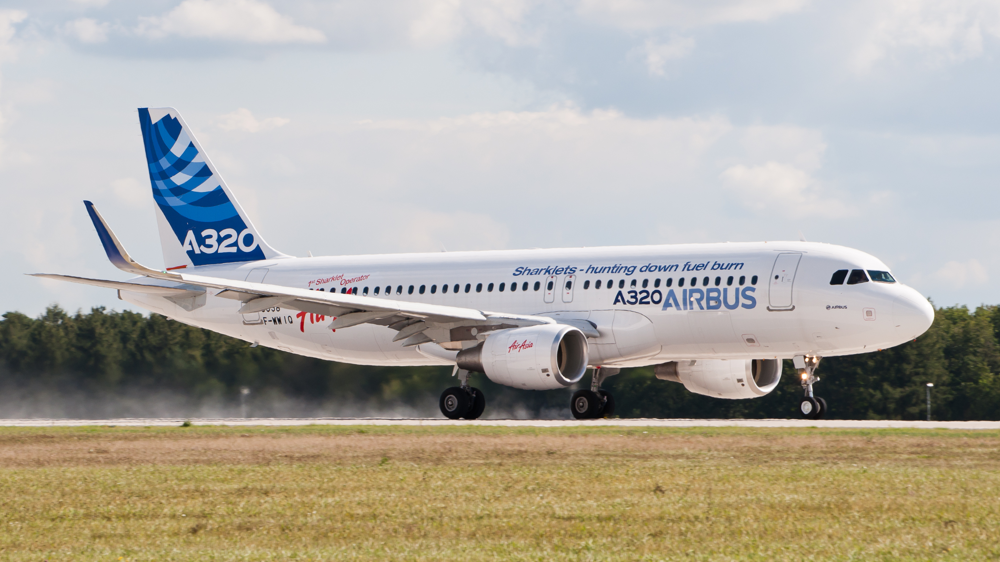
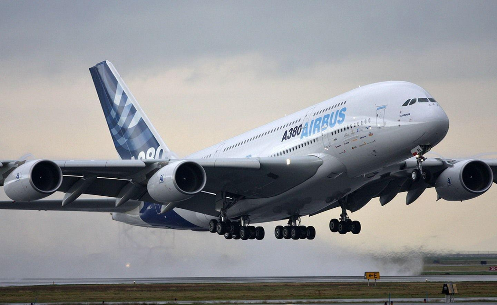

Airbus
Airbus is a prominent name in the aviation industry. Based in France, this company has been able to manufacture some of the most modern aircrafts that serve millions of passengers and cargo annually. Airlines usually prefer this aviation giant because of their impeccable safety record and ability to have such long range powerful airplanes that also give comfort with efficiency as an important trait! These are my personal favourites and why i find them interesting.

Airbus A350
A modern long-haul aircraft known for its quiet cabin and advanced technology.
Read more ↓
A320 Family
A reliable short to medium haul aircraft used by airlines all over the world.
Read more ↓
Airbus A350
The Airbus A350 also known as the eyemasked airliner amongst us as avgeeks, is one of the most advanced long-haul aircraft ever built. This was Airbus' response to the amazing Boeing 777 from its rival company, Boeing. This is by far the best looking airplane in the market right now and nobody can tell me otherwise. Redefining long-haul travel, the A350 is the result of a vision to create the future of air transport. Officially launched in 2006, the programme was a clean-sheet design from the start, focused on creating a step-change in efficiency and passenger comfort through state-of-the-art technology. It has two variants; The A350-900, after its first flight in 2013, the A350-900 entered commercial service in early 2015, establishing a new benchmark for long-range, twin-engine aircraft. Then the A350-1000, the longer-fuselage version followed, entering service in 2018 to offer airlines additional capacity for their busiest long-haul routes.
The Airbus A350 is powered by two Trent XWB turbofan engines, which are known for their efficiency and performance. There are two variants of the engine: the Trent XWB-84, which powers the A350-900, and the Trent XWB-97, which powers the A350-1000. Personally, the Airbus A350 is my favourite modern aircraft. The smooth design and the “eye mask” cockpit give it a futuristic look. To me, it feels like a perfect balance between technology, comfort, and efficiency, which is why I see it as one of the best aircraft in the world today.
| Type | Long-haul |
|---|---|
| First Flight | 2013 |
A320 Family
The Airbus A320 family is widely known as a short haul icon. Airlines around the world use these for their busiest short routes as it is seen as a reliable workhorse and a profit making machine. An Airbus A320 Family aircraft takes off or lands somewhere in the world every two seconds. Since the first A320 flight, on the 22 February 1987, the A320 Family has been in a state of continuous evolution. As a leading family of single-aisle aircraft, its evolution reflects our commitment to performance.
We say it is a "family" simply because it is composed of different members. Key Members of the A320 Family:
- A318: The smallest/shortest member, known as the "baby bus".
- A319 / A319neo: A shortened version of the A320.
- A320 / A320neo: The original, baseline model of the family.
- A321 / A321neo: A stretched version, offering higher capacity.
- A321LR / A321XLR: Specialized long-range, high-capacity variants of the A321neo.
I like the Airbus A320 family because it is one of the most common aircraft in the world, yet still very reliable. It represents everyday aviation, connecting cities and people constantly, and I find that consistency really impressive.
| Type | Short/Medium-haul |
|---|---|
| First Flight | 1987 |
Airbus A380
The A380 is the largest passenger aircraft in the world. What a wonder aircraft it is! How can something so massive stay afloat in the skies you ask? Its the beauty of aviation my friend. Its double-deck design makes it unique and iconic.
The Airbus A380 is the largest passenger plane ever built, measuring 73 metres long with a wingspan of nearly 80 metres. It’s the only full-length double-deck aircraft, capable of carrying over 850 passengers in an all-economy layout. Known for its quiet engines, smooth ride and spacious cabins, the A380 offers an unmatched flying experience. Its unique design allows airlines to serve more passengers on long-haul routes with greater comfort and efficiency. The Airbus A380 stands out to me because of its sheer size and uniqueness. It doesn’t just feel like an aircraft — it feels like a flying experience. The double-deck design makes it iconic, and I think it will always be remembered as one of the greatest engineering achievements in aviation.
| Type | Long-haul |
|---|---|
| First Flight | 2005 |
Learn more on the official site: Airbus.com